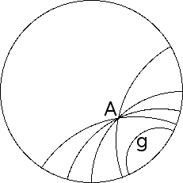

Parallel Lines
| The geodesics of the Poincare disc model play the role of lines in the Euclidean plane, so we use geodesics to investigate the status of the parallel postulate in the Poincare disc. |
| That is, given a geodesic g and a point A not on g, how many geodesics parallel to g pass through A? |
| Here we say two geodesics are parallel if they never meet, even when extended to the boundary of the Poincare disc. |
|  |
| We see infinitely many geodesics parallel to g pass through the point A. |
| In the last section we saw that all geodesics through A have poles lying on the polar of A. |
| Some of these geodesics will intersect g, but many will not. |
| Hence in hyperbolic space through a point not on a given line, more than one line is parallel to the given line. |
Return to hyperbolic geometry.